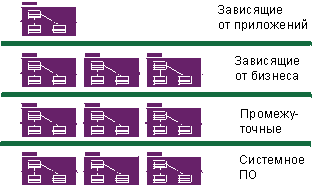

|

Основанная на компонентах архитектура сослоями
Архитектура компонентов - это архитектура, основанная на заменяемых компонентах, как описано в Концепции: Компонент. Поскольку Архитектура компонентов основана на независимых,
заменяемых, модульных компонентах, то она позволяет управлять сложностью и поддерживать возможность повторного
применения.
Варианты проводят Rational Unified Process (RUP) сначала и до конца всего жизненного цикла, однако деятельности
проектирования сосредоточены вокруг идеиархитектуры системы, и - для систем с объемным программным обеспечением - вокруг
архитектуры программного обеспечения. Ранние итерации процесса - преимущественно на этапе уточнения - сфокусированы на
создании и проверке архитектуры программного обеспечения, которая на начальном цикле разработки
принимает форму исполняемого архитектурного прототипа, превращающегося в последующих итерациях в окончательную систему.
Под исполняемой архитектурой понимается частичная реализация компоновки системы, демонстрирующая выбранные функции и
свойства системы, в частности, удовлетворяющие нефункциональные требования. Целью исполняемой архитектуры является
снижение рисков, связанных с производительностью, емкостью, надежностью и другими "способностями", так что все
функциональные возможности системы могут быть добавлены наэтапе
построения на солидном основании, без риска выхода из строя.
Для получения представления об архитектуре - в особенности об архитектуре программного обеспечения - и объяснения
важности этого представления обратитесь к разделуКонцепции:
Архитектура программного обеспечения.
RUP предоставляет методичный систематический путь проектирования, разработки и проверки архитектуры. Предлагаются
шаблоны для архитектурного описания для концепций нескольких архитектурных представлений и для фиксации архитектурного
стиля, правил проектирования и ограничений. Дисциплина Анализ и проектирование содержит определенные деятельности,
предназначенные для идентификации архитектурных ограничений и существенных архитектурных элементов, а также
рекомендации по осуществлению выбора архитектуры. Процесс управления показывает как при планировании ранних операций
принимается во внимание эскиз архитектуры и преодоление основных технических рисков. Дополнительная информация
приведена в дисциплине Управление проектом и всех деятельностях, связанных с Ролью: Архитектор программного обеспечения.
Архитектура важна по нескольким причинам:
-
Архитектура позволяет получить и сохранить интеллектуальный контроль над проектом для управления его целостностью и
обеспечения целостности системы.
Сложная система представляет собой больше чем сумму ее частей; более, чем успех небольших независимых тактических
решений. Должна существовать объединяющая согласованная структура, организующая эти части и предоставляющая точные
правила по наращиванию системы, при котором сложность системы не выйдет за пределы человеческого понимания.
Архитектура устанавливает средства для улучшенной связности и понимания проекта, устанавливая стандартный набор
указателей, стандартный словарь для обсуждения вопросов проектирования.
-
Архитектура представляет собой эффективную основу для масштабного повторного применения.
Ясно излагая основные компоненты и критические связующие звенья между ними, архитектура позволяет размышлять о
повторном применении - как внутреннем, которое представляет собой идентификацией стандартных частей, так и внешнем,
которое представляет собой объединение готовых компонентов. Однако архитектура позволяет также повторное применение
в более крупном масштабе: самой архитектуры в контексте линейки продуктов, предназначенной для различной
функциональности в общем домене.
-
Архитектура обеспечивает основу для управления проектом.
Планирование и подбор персонала организуются по линейкам основных компонентов. Фундаментальные структурные решения
принимаются небольшим сплоченным коллективом; они не распределяются. Разработка делится между небольшими
коллективами, каждый из которых отвечает за одну или несколько частей системы.
Разработка на основании компонентов представляет собой разновидность общей разработки приложений, в которой:
-
Приложение строится из отдельных исполняемых компонентов, которые разрабатываются относительно
независимо друг от друга, возможно, различными коллективами. Такие компоненты называются в RUP
"компонентами сборки". Более подробное определение приведено в Концепциях:
Компоненты.
-
Приложение может быть обновлено малыми приращениями, обновляя только некоторые из компонентов сборки,
которые составляют приложение.
-
Компоненты сборки могут быть общими для нескольких приложений, что создает возможности повторного
применения, но также и возможности зависимостей между проектами.
-
Основанные на компонентах приложения имеют тенденцию быть распределенными.
Компоненты сборки создаются следующим образом:
-
Определяя саму модульную архитектуру, вы определяете, выделяете, проектируете, разрабатываете и тестируете
подходящие компоненты. Эти компоненты можно протестировать по отдельности и интегрировать постепенно для
формирования всей системы.
-
Более того, некоторые из этих компонентов можно разрабатывать как многоразовые, особенно компоненты, которые
предоставляют стандартные решения для широкого диапазона стандартных вопросов. Эти многоразовые компоненты, которые
могут быть больше чем просто наборами утилит или библиотек классов, формируют основу повторного применения в рамках
организации, увеличивая в целом эффективность и качество программного обеспечения.
-
Недавнее развитие коммерчески успешных инфраструктур компонентов - таких как CORBA, Internet, ActiveX, JavaBeans,
.NET и J2EE - инициировало целую отрасль готовых компонентов для различных доменов, что позволяет покупать и
интегрировать компоненты вместо их разработки.
Первый пункт в приведенном списке использует старые концепции модульности и инкапсуляции, продвигая лежащую в основе
этих концепций объектно-ориентированную технологию на шаг дальше. Последние два пункта в списке переключают разработку
программного обеспечения с программирования на составление программного обеспечения путем сборки компонентов.
RUP поддерживает разработку на
основе компонентов следующим образом:
-
Итерационный подход позволяет постепенно идентифицировать компоненты и решить, какие из них следует разрабатывать,
какие использовать повторно, а какие - купить.
-
Фокусировка на архитектуре программного обеспечения позволяет сформулировать структуру - компоненты и пути их
интеграции - включая фундаментальные механизмы и шаблоны, посредством которых они взаимодействуют. Это в свою
очередь поддерживает аспекты планирования управления проектом, в которых зависимости между компонентами могут
помочь определить, какие компоненты можно разрабатывать параллельно, а какие - последовательно.
-
Такие концепции, как пакеты, подсистемы и уровни, применяются во время Анализа и проектирования для организации
компонентов и задания связующих звеньев.
-
Тестирование сначала организуется вокруг компонентов, а затем постепенно вокруг более крупных наборов
интегрированных компонентов.
Дополнительная информация о компонентах приведена вКонцепциях:
Компоненты.
|